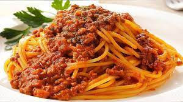

Spaghetti Bolognese

Description
The classic Italian spaghetti bolognese is a must for any home cook worth their salt to have as part of their repertoire.
This particular recipe is a traditional take on the dish and includes all the essential elements: the meat, the soffritto, and
wine among other things while remaining adaptable in more ways than one. Beware that for the best results the sauce
should simmer for at least an hour. That being said, please enjoy this sumptuous bolognese!
Ingredients
- 500g of minced beef/pork (bolder, richer flavour) or pork/veal (lighter, subtler flavour)
- 2 large or 3 small carrots
- 1 large or 2 small celery sticks
- 1 large onion
- 2 cloves of garlic
- 1 can of diced tomatoes
- 1 tablespoon of tomato purée
- A bottle of white (or red) wine
- Olive oil
- Salt and black pepper
- 1 bay leaf
- 80g of spaghetti (dry)
- Parmigiano Reggiano or Pecorino romano cheese
Steps
- Chop the onion, carrots and celery sticks into small cubes.
- Add a couple tablespoons of olive oil to a large pot and set the temperature to medium-high.
- Add the chopped soffritto of onion, carrots and celery to the pot and cook for ~5 min.
- Move the vegetables to one side of the pot and add the minced garlic.
- Once the garlic turns golden brown, add the minced meat and some salt.
- Allow the minced meat to gently brown and continue to move it around until all the meat is cooked.
- Stir in the tomato purée and cook for 1min to intensify the flavours of the dish.
- Pour in a glass of white wine to deglaze the bottom of the pot.
- Add the chopped tomatoes and around as much water.
- Add the bay leaf and some black pepper.
- Let the sauce start bubbling, then turn down to medium heat.
- Stir every 10-15min for 1hour.
- Nearing the completion of the sauce, boil some water in a large pot and salt it well.
- Add the pasta and cook until al dente.
- In a pan on medium-high heat add some sauce and pasta with some starchy pasta water.
- Combine the sauce and pasta, transfer it to a large plate, grate some Parmigiano or Pecorino cheese on top and enjoy!